plus6 Integrated Milestone Report
This report summarizes the parallel plus6 lineage after adding six new datasets to the validated integrated T/NK base. It focuses on integration structure, simple annotation, raw Phase 4 score space, and γδ-focused review statistics.
Compatibility
The six new inputs were standardized into the plus6 lineage before a fresh scVI integration. The table below records the compatibility status used for the merge.
| alias | source_gse_id | n_cells | n_genes_before_align | n_samples | n_paired_ab | n_paired_gd | sorted_gdt_flag | count_matrix_source | n_genes_after_align | n_missing_vs_base | output_h5ad |
|---|---|---|---|---|---|---|---|---|---|---|---|
| GDT_2020AUG_woCOV | GDT_2020AUG_woCOV | 25904 | 14122 | 4 | 0 | 15066 | True | X_integer_like | 27413 | 13478 | /home/tanlikai/databank/publicdata/tools/output_geo_tcell_research/high_speed_temp/Integrated_dataset/plus6_inputs/GDT_2020AUG_woCOV_plus6_prepped.h5ad |
| GDTlung2023july_7p | GDTlung2023july_7p | 15175 | 33538 | 14 | 0 | 2927 | True | X_integer_like | 27413 | 7123 | /home/tanlikai/databank/publicdata/tools/output_geo_tcell_research/high_speed_temp/Integrated_dataset/plus6_inputs/GDTlung2023july_7p_plus6_prepped.h5ad |
| GSE144469 | GSE144469 | 107068 | 19109 | 39 | 65616 | 10556 | False | layers[counts] | 27413 | 9169 | /home/tanlikai/databank/publicdata/tools/output_geo_tcell_research/high_speed_temp/Integrated_dataset/plus6_inputs/GSE144469_plus6_prepped.h5ad |
| GSE206325 | GSE206325 | 501012 | 13303 | 288 | 0 | 0 | False | layers[counts] | 27413 | 14464 | /home/tanlikai/databank/publicdata/tools/output_geo_tcell_research/high_speed_temp/Integrated_dataset/plus6_inputs/GSE206325_plus6_prepped.h5ad |
| HRA005041 | HRA005041 | 766639 | 32602 | 321 | 547970 | 5471 | False | pseudo_counts_from_seurat_lognormalize | 27413 | 7215 | /home/tanlikai/databank/publicdata/tools/output_geo_tcell_research/high_speed_temp/Integrated_dataset/plus6_inputs/HRA005041_plus6_prepped.h5ad |
| MalteGDT | MalteGDT | 7800 | 12655 | 2 | 0 | 5650 | True | X_integer_like | 27413 | 14838 | /home/tanlikai/databank/publicdata/tools/output_geo_tcell_research/high_speed_temp/Integrated_dataset/plus6_inputs/MalteGDT_plus6_prepped.h5ad |
| current_integrated_base | multiple_existing_gses | 3705306 | 27413 | 767 | 651958 | 0 | False | X | 27413 | 0 | /home/tanlikai/databank/publicdata/tools/output_geo_tcell_research/high_speed_temp/Integrated_dataset/plus6_inputs/current_integrated_base_plus6_prepped.h5ad |
Quantitative Summary
Phase 3, Phase 4, and simple-annotation summaries are retained as compact tables. The detailed Treg/CD8 diagnostic panels are intentionally omitted from this final report.
Phase 3
| n_cells | n_genes | n_batches | n_gses | n_leiden | hvg_method | runtime_seconds |
|---|---|---|---|---|---|---|
| 5128904 | 27413 | 1422 | 31 | 25 | seurat_v3 | 20087.355475 |
Phase 4 Score Summary
| score_name | n_cells | mean | std | min | median | p95 | p99 | max |
|---|---|---|---|---|---|---|---|---|
| phase4_tra_score | 5128904 | -0.051578 | 0.027063 | -0.181523 | -0.052668 | -0.005501 | 0.016476 | 0.435301 |
| phase4_trb_score | 5128904 | -0.055114 | 0.036960 | -0.228861 | -0.055242 | 0.005213 | 0.034284 | 0.302085 |
| phase4_trab_score | 5128904 | -0.046469 | 0.026592 | -0.191340 | -0.046278 | -0.003293 | 0.016047 | 0.251166 |
| phase4_trd_score | 5128904 | 0.002657 | 0.130225 | -0.186971 | -0.034010 | 0.284067 | 0.633487 | 1.533918 |
| phase4_trd_minus_trab | 5128904 | 0.049126 | 0.137783 | -0.382292 | 0.010674 | 0.348099 | 0.702100 | 1.592238 |
| phase4_trd_score_scaled | 5128904 | 0.110192 | 0.075673 | 0.000000 | 0.088885 | 0.273718 | 0.476764 | 1.000000 |
| phase4_trab_score_scaled | 5128904 | 0.327389 | 0.060095 | 0.000000 | 0.327819 | 0.424958 | 0.468664 | 1.000000 |
| phase4_trd_minus_trab_scaled | 5128904 | -0.217197 | 0.105210 | -0.967549 | -0.237535 | -0.006087 | 0.203245 | 0.702925 |
Annotation Cluster Summary
| leiden | n_cells | n_gses | paired_ab_fraction | paired_gd_fraction | phase4_trd_score_median | phase4_trab_score_median | phase4_trd_minus_trab_median | gdt_marker_mean | treg_marker_mean | nk_marker_mean | tcell_marker_mean | cd4_marker_mean | cd8_marker_mean | gdt_rule | nk_rule | treg_rule | cd8_rule | cd4_rule | treg_cd4_ge_cd8 | treg_nk_low | simple_annotation_plus6 |
|---|---|---|---|---|---|---|---|---|---|---|---|---|---|---|---|---|---|---|---|---|---|
| 15 | 107880 | 29 | 0.041546 | 0.000871 | -0.037645 | -0.077435 | 0.039731 | 0.000000 | 0.000000 | 0.000000 | 0.281185 | 0.607730 | 0.000000 | False | False | False | False | True | True | True | CD4_T |
| 6 | 191877 | 30 | 0.253282 | 0.034715 | -0.028009 | -0.050950 | 0.020162 | 0.000000 | 0.000000 | 0.915039 | 1.128161 | 1.330579 | 1.252080 | False | False | False | False | True | True | False | CD4_T |
| 8 | 327887 | 30 | 0.068280 | 0.000915 | -0.039940 | -0.050549 | 0.008518 | 0.000000 | 0.000000 | 0.000000 | 0.264689 | 0.529363 | 0.234984 | False | False | False | False | True | True | True | CD4_T |
| 4 | 354509 | 30 | 0.373519 | 0.002502 | -0.036009 | -0.044057 | 0.007144 | 0.000000 | 0.000000 | 0.000000 | 1.095887 | 1.118734 | 0.560455 | False | False | False | False | True | True | True | CD4_T |
| 5 | 164505 | 29 | 0.148543 | 0.000213 | -0.036443 | -0.043912 | 0.006576 | 0.000000 | 0.000000 | 0.000000 | 1.102161 | 0.915513 | 0.000000 | False | False | False | False | True | True | True | CD4_T |
| 7 | 223837 | 30 | 0.520901 | 0.000344 | -0.038460 | -0.045048 | 0.005977 | 0.000000 | 0.000000 | 0.151050 | 1.107140 | 1.199885 | 0.933379 | False | False | False | False | True | True | True | CD4_T |
| 10 | 465413 | 30 | 0.348190 | 0.000937 | -0.032954 | -0.037651 | 0.004267 | 0.000000 | 0.000000 | 0.000000 | 1.082517 | 1.393742 | 0.000000 | False | False | False | False | True | True | True | CD4_T |
| 11 | 615707 | 30 | 0.492604 | 0.000300 | -0.034515 | -0.037158 | 0.002261 | 0.000000 | 0.000000 | 0.000000 | 1.088831 | 1.526632 | 0.000000 | False | False | False | False | True | True | True | CD4_T |
| 13 | 223369 | 30 | 0.105113 | 0.039361 | 0.123344 | -0.069602 | 0.197037 | 0.000000 | 0.000000 | 1.598215 | 0.902922 | 0.000000 | 1.222653 | False | False | False | True | False | False | False | CD8_T |
| 9 | 453368 | 30 | 0.033697 | 0.004041 | -0.021825 | -0.066959 | 0.047339 | 0.000000 | 0.000000 | 3.059014 | 0.861431 | 0.000000 | 1.669079 | False | False | False | True | False | False | False | CD8_T |
| 18 | 72152 | 30 | 0.105222 | 0.097114 | -0.027012 | -0.059513 | 0.031039 | 0.000000 | 0.000000 | 1.067309 | 1.006859 | 0.000000 | 1.195534 | False | False | False | True | False | False | False | CD8_T |
| 19 | 34596 | 28 | 0.023818 | 0.002630 | -0.030145 | -0.049043 | 0.016494 | 0.000000 | 0.303840 | 0.433467 | 1.427049 | 0.663027 | 1.509537 | False | False | False | True | False | False | False | CD8_T |
| 2 | 90576 | 30 | 0.288112 | 0.006911 | -0.051207 | -0.069881 | 0.016220 | 0.000000 | 0.000000 | 0.591719 | 1.348881 | 0.000000 | 0.772080 | False | False | False | True | False | False | False | CD8_T |
| 17 | 21283 | 30 | 0.061786 | 0.000564 | -0.038737 | -0.051151 | 0.010331 | 0.000000 | 0.000000 | 0.427178 | 1.045416 | 0.517512 | 0.955789 | False | False | False | True | False | False | False | CD8_T |
| 3 | 530147 | 30 | 0.204489 | 0.005187 | -0.033534 | -0.042076 | 0.007043 | 0.000000 | 0.000000 | 0.659098 | 1.162418 | 0.376302 | 1.851546 | False | False | False | True | False | False | False | CD8_T |
| 22 | 68137 | 30 | 0.305664 | 0.000426 | -0.033727 | -0.038195 | 0.003409 | 0.000000 | 0.000000 | 1.721707 | 1.229275 | 0.485409 | 1.295973 | False | False | False | True | False | False | False | CD8_T |
| 12 | 304966 | 30 | 0.301391 | 0.001577 | -0.032907 | -0.034014 | -0.000382 | 0.000000 | 0.000000 | 2.129648 | 1.297744 | 0.000000 | 2.506848 | False | False | False | True | False | False | False | CD8_T |
| 16 | 262628 | 31 | 0.061429 | 0.003107 | -0.040071 | -0.041143 | -0.000716 | 0.000000 | 0.362776 | 1.020127 | 1.273758 | 0.000000 | 2.443943 | False | False | False | True | False | False | False | CD8_T |
| 21 | 25443 | 29 | 0.072358 | 0.001611 | -0.049389 | -0.101016 | 0.049666 | 0.000000 | 0.000000 | 0.440075 | 0.000000 | 0.131853 | 0.000000 | False | True | False | False | False | True | False | NK_cell |
| 26 | 21 | 1 | 0.000000 | 0.000000 | -0.037295 | -0.081073 | 0.044280 | 0.000000 | 0.000000 | 0.613911 | 0.000000 | 0.758530 | 0.396929 | False | True | False | False | False | True | False | NK_cell |
| 0 | 231266 | 31 | 0.104408 | 0.000182 | -0.025306 | -0.053441 | 0.028817 | 0.000000 | 0.000000 | 0.611109 | 0.000000 | 0.000000 | 0.271705 | False | True | False | False | False | False | False | NK_cell |
| 1 | 319540 | 29 | 0.338402 | 0.000304 | -0.039704 | -0.032441 | -0.008088 | 0.000000 | 0.724536 | 0.000000 | 1.173226 | 1.026201 | 0.000000 | False | False | True | False | True | True | True | Treg |
| 14 | 19705 | 29 | 0.125704 | 0.409388 | 0.481321 | -0.053539 | 0.539019 | 0.334548 | 0.000000 | 0.000000 | 1.943039 | 0.809050 | 0.000000 | True | False | False | False | True | True | True | gdT_cell |
| 23 | 6136 | 18 | 0.024772 | 0.003259 | -0.058550 | -0.096307 | 0.033371 | 0.000000 | 0.000000 | 0.000000 | 0.000000 | 0.000000 | 0.000000 | False | False | False | False | False | True | True | other |
| 20 | 13956 | 27 | 0.190527 | 0.020923 | -0.025638 | -0.052821 | 0.029581 | 0.000000 | 0.000000 | 0.000000 | 0.000000 | 0.000000 | 0.000000 | False | False | False | False | False | True | True | other |
Top GSE Composition
| source_gse_id | n_cells | phase4_trab_score_mean | phase4_trd_score_mean | phase4_trd_minus_trab_mean | phase4_trd_minus_trab_median |
|---|---|---|---|---|---|
| HRA005041 | 766639 | -0.051022 | 0.012618 | 0.063640 | 0.009901 |
| GSE243013 | 759436 | -0.050324 | -0.009931 | 0.040393 | 0.015378 |
| GSE206325 | 501012 | -0.039145 | 0.010443 | 0.049588 | 0.005462 |
| GSE254249 | 406494 | -0.052944 | 0.029713 | 0.082657 | 0.017107 |
| GSE243905 | 350438 | -0.039653 | -0.012098 | 0.027555 | 0.002998 |
| GSE287301 | 340227 | -0.057241 | -0.040121 | 0.017120 | 0.005696 |
| GSE235863 | 241766 | -0.054778 | -0.018750 | 0.036028 | 0.016731 |
| GSE212217 | 213706 | -0.031252 | 0.012095 | 0.043347 | 0.000708 |
| GSE243572 | 188217 | -0.052274 | -0.000680 | 0.051594 | 0.030236 |
| GSE228597 | 149812 | -0.030700 | 0.038331 | 0.069031 | 0.009437 |
| GSE188620 | 123218 | -0.052785 | -0.011571 | 0.041214 | 0.020555 |
| GSE308075 | 112337 | -0.031962 | -0.033403 | -0.001441 | -0.008721 |
| GSE287541 | 110874 | -0.041697 | -0.016336 | 0.025362 | 0.006720 |
| GSE144469 | 107068 | -0.030282 | 0.000460 | 0.030742 | -0.026478 |
| GSE254176 | 96953 | -0.041344 | 0.001821 | 0.043165 | 0.004731 |
| GSE267645 | 92501 | -0.057527 | -0.005366 | 0.052160 | 0.024405 |
| GSE311112 | 90599 | -0.057418 | -0.009060 | 0.048358 | 0.027409 |
| GSE162498 | 75880 | -0.033116 | -0.014639 | 0.018477 | 0.002053 |
| GSE178882 | 67755 | -0.049187 | -0.002907 | 0.046280 | 0.026218 |
| GSE125527 | 46396 | -0.030400 | 0.013178 | 0.043578 | 0.007789 |
| GSE252762 | 45132 | -0.043471 | 0.042293 | 0.085764 | 0.009452 |
| GSE301528 | 44105 | -0.042616 | 0.011575 | 0.054192 | 0.011502 |
| GSE211504 | 37244 | -0.026616 | -0.026478 | 0.000138 | -0.003032 |
| GSE171037 | 31937 | -0.026983 | -0.028015 | -0.001032 | -0.007262 |
| GDT_2020AUG_woCOV | 25904 | -0.055878 | 0.522814 | 0.578692 | 0.597040 |
| GSE240865 | 21680 | -0.029281 | -0.015535 | 0.013746 | 0.004747 |
| GSE145926 | 21039 | -0.063622 | -0.018964 | 0.044658 | 0.030014 |
| GSE234069 | 20807 | -0.015393 | -0.011129 | 0.004264 | -0.011934 |
| GSE190870 | 16753 | -0.093528 | -0.091304 | 0.002224 | 0.004465 |
| GDTlung2023july_7p | 15175 | -0.058443 | 0.139837 | 0.198280 | 0.189631 |
Tissue Composition
| tissue | n_cells | phase4_trab_score_mean | phase4_trd_score_mean | phase4_trd_minus_trab_mean | phase4_trd_minus_trab_median |
|---|---|---|---|---|---|
| blood | 1924475 | -0.045512 | 0.000812 | 0.046324 | 0.012410 |
| tumor | 1145163 | -0.051618 | -0.019049 | 0.032570 | 0.011856 |
| Tumor | 236892 | -0.033133 | -0.006753 | 0.026379 | -0.002188 |
| Normal | 227320 | -0.044730 | 0.027651 | 0.072381 | 0.013802 |
| heart | 169851 | -0.033124 | 0.032803 | 0.065927 | 0.009364 |
| csf | 128340 | -0.030479 | -0.017577 | 0.012903 | -0.004758 |
| rectum | 124404 | -0.047391 | -0.011475 | 0.035915 | 0.013298 |
| duodenum | 102207 | -0.049317 | 0.051140 | 0.100457 | 0.011166 |
| liver_tumor | 95702 | -0.053346 | -0.025975 | 0.027372 | 0.017393 |
| stomach | 93885 | -0.048773 | -0.002698 | 0.046075 | 0.006502 |
| peripheral blood | 83669 | -0.050580 | 0.113503 | 0.164083 | 0.013465 |
| Descending, sigmoidal colon; rectum | 80500 | -0.030951 | 0.001899 | 0.032850 | -0.025604 |
| jejunum | 72733 | -0.053816 | 0.071709 | 0.125525 | 0.013413 |
| pancreas | 67484 | -0.046522 | -0.020285 | 0.026237 | 0.002673 |
| esophagus | 53012 | -0.054410 | -0.004120 | 0.050291 | 0.013102 |
| sigmoid colon | 48557 | -0.048653 | 0.013471 | 0.062124 | 0.007951 |
| bone_marrow | 44105 | -0.042616 | 0.011575 | 0.054192 | 0.011502 |
| spleen | 37330 | -0.052677 | 0.014472 | 0.067149 | 0.009717 |
| NaN | 36800 | -0.043350 | 0.014845 | 0.058195 | 0.006016 |
| lung | 32691 | -0.057779 | 0.066286 | 0.124066 | 0.024783 |
| liver | 23706 | -0.058629 | 0.022624 | 0.081253 | 0.015727 |
| ileum | 22355 | -0.045327 | 0.015181 | 0.060508 | 0.009998 |
| balf | 21039 | -0.063622 | -0.018964 | 0.044658 | 0.030014 |
| trachea | 20936 | -0.058761 | -0.018249 | 0.040512 | 0.022668 |
| mesenteric lymph node | 20733 | -0.045513 | -0.011317 | 0.034197 | 0.007119 |
| bladder | 20214 | -0.051624 | 0.024445 | 0.076069 | 0.016820 |
| ascending colon | 19489 | -0.045387 | 0.015062 | 0.060450 | 0.012389 |
| skin | 19007 | -0.059215 | -0.004469 | 0.054746 | 0.022273 |
| muscle | 17737 | -0.056754 | 0.045171 | 0.101925 | 0.021193 |
| lymph_node_metastasis | 16753 | -0.093528 | -0.091304 | 0.002224 | 0.004465 |
γδ Statistics
The γδ-focused review layer includes direct counts, overlap structure at TRD - TRAB > 0.4, and tissue-specific summaries for annotated gdT cells.
γδ-Focused Candidate Statistics
| metric | value |
|---|---|
| total_cells | 5128904 |
| sorted_gdT_true | 48879 |
| paired_TRG_TRD_not_doublet | 33987 |
| TRD_minus_TRAB_gt_0p4_no_productive_TRA_TRB_not_NK | 182796 |
| doublet_proxy_paired_ab_and_paired_gd | 5683 |
| union_any_of_three_criteria | 206524 |
| gdT_cell_annotation_total | 19705 |
| gdT_cell_annotation_with_paired_TRG_TRD | 8067 |
| gdT_cell_annotation_meeting_any_three | 15448 |
Overlap Breakdown
| category | n_cells |
|---|---|
| sorted_gdT_only | 15840 |
| paired_TRG_TRD_not_doublet_only | 2970 |
| TRD_minus_TRAB_gt_0p4_only | 147301 |
| sorted_gdT_and_paired_TRG_TRD_only | 4918 |
| sorted_gdT_and_TRD_minus_TRAB_gt_0p4_only | 9396 |
| paired_TRG_TRD_and_TRD_minus_TRAB_gt_0p4_only | 7374 |
| all_three_criteria | 18725 |
gdT Cells With Paired gdTCR by Tissue
| tissue | gdt_cells | gdt_with_paired_TRG_TRD | fraction_paired_TRG_TRD_within_gdt |
|---|---|---|---|
| cord blood | 10397 | 5129 | 0.493315 |
| peripheral blood | 4772 | 2929 | 0.613789 |
| Descending, sigmoidal colon; rectum | 17 | 4 | 0.235294 |
| pancreas | 58 | 3 | 0.051724 |
| duodenum | 95 | 1 | 0.010526 |
| lung | 22 | 1 | 0.045455 |
| thymus | 2127 | 0 | 0.000000 |
| blood | 978 | 0 | 0.000000 |
| tumor | 351 | 0 | 0.000000 |
| csf | 307 | 0 | 0.000000 |
| heart | 115 | 0 | 0.000000 |
| spleen | 89 | 0 | 0.000000 |
| Tumor | 65 | 0 | 0.000000 |
| jejunum | 40 | 0 | 0.000000 |
| bone marrow | 36 | 0 | 0.000000 |
| Normal | 30 | 0 | 0.000000 |
| stomach | 29 | 0 | 0.000000 |
| esophagus | 28 | 0 | 0.000000 |
| bone_marrow | 20 | 0 | 0.000000 |
| sigmoid colon | 20 | 0 | 0.000000 |
| kidney | 15 | 0 | 0.000000 |
| rectum | 15 | 0 | 0.000000 |
| liver | 14 | 0 | 0.000000 |
| skin | 11 | 0 | 0.000000 |
| unknown | 11 | 0 | 0.000000 |
| liver_tumor | 6 | 0 | 0.000000 |
| muscle | 5 | 0 | 0.000000 |
| Ascending, transverse, descending, sigmoidal colon; rectum | 4 | 0 | 0.000000 |
| balf | 4 | 0 | 0.000000 |
| mixed_duodenum_pbmc | 4 | 0 | 0.000000 |
| Sigmoidal colon, rectum | 3 | 0 | 0.000000 |
| bladder | 3 | 0 | 0.000000 |
| mesenteric lymph node | 3 | 0 | 0.000000 |
| adjacent_normal_tissue | 2 | 0 | 0.000000 |
| lymph node | 2 | 0 | 0.000000 |
| tracheal_aspirate | 2 | 0 | 0.000000 |
| Ascending, Descending, sigmoidal colon; rectum | 1 | 0 | 0.000000 |
| Sigmoidal colon | 1 | 0 | 0.000000 |
| ascending colon | 1 | 0 | 0.000000 |
| ileum | 1 | 0 | 0.000000 |
gdT Cells Meeting At Least One of the Three Criteria by Tissue
| tissue | gdt_cells | gdt_meeting_any_three | fraction_meeting_any_three_within_gdt |
|---|---|---|---|
| cord blood | 10397 | 10397 | 1.000000 |
| peripheral blood | 4772 | 4582 | 0.960184 |
| blood | 978 | 189 | 0.193252 |
| tumor | 351 | 36 | 0.102564 |
| thymus | 2127 | 31 | 0.014575 |
| duodenum | 95 | 29 | 0.305263 |
| csf | 307 | 28 | 0.091205 |
| heart | 115 | 23 | 0.200000 |
| bone marrow | 36 | 16 | 0.444444 |
| spleen | 89 | 15 | 0.168539 |
| pancreas | 58 | 15 | 0.258621 |
| jejunum | 40 | 13 | 0.325000 |
| Tumor | 65 | 7 | 0.107692 |
| esophagus | 28 | 7 | 0.250000 |
| bone_marrow | 20 | 7 | 0.350000 |
| Normal | 30 | 6 | 0.200000 |
| lung | 22 | 6 | 0.272727 |
| stomach | 29 | 5 | 0.172414 |
| skin | 11 | 5 | 0.454545 |
| sigmoid colon | 20 | 3 | 0.150000 |
| kidney | 15 | 3 | 0.200000 |
| rectum | 15 | 3 | 0.200000 |
| liver | 14 | 3 | 0.214286 |
| muscle | 5 | 3 | 0.600000 |
| bladder | 3 | 3 | 1.000000 |
| Descending, sigmoidal colon; rectum | 17 | 2 | 0.117647 |
| unknown | 11 | 2 | 0.181818 |
| balf | 4 | 2 | 0.500000 |
| mixed_duodenum_pbmc | 4 | 2 | 0.500000 |
| lymph node | 2 | 2 | 1.000000 |
| liver_tumor | 6 | 1 | 0.166667 |
| adjacent_normal_tissue | 2 | 1 | 0.500000 |
| ileum | 1 | 1 | 1.000000 |
| Ascending, transverse, descending, sigmoidal colon; rectum | 4 | 0 | 0.000000 |
| Sigmoidal colon, rectum | 3 | 0 | 0.000000 |
| mesenteric lymph node | 3 | 0 | 0.000000 |
| tracheal_aspirate | 2 | 0 | 0.000000 |
| Ascending, Descending, sigmoidal colon; rectum | 1 | 0 | 0.000000 |
| Sigmoidal colon | 1 | 0 | 0.000000 |
| ascending colon | 1 | 0 | 0.000000 |
Phase 3 Integration
The `plus6` lineage uses a fresh scVI latent space after adding six new datasets. The report keeps only the Phase 3 views that are useful for reviewing study mixing and tissue structure.
plus6 Phase 3 UMAP by GSE
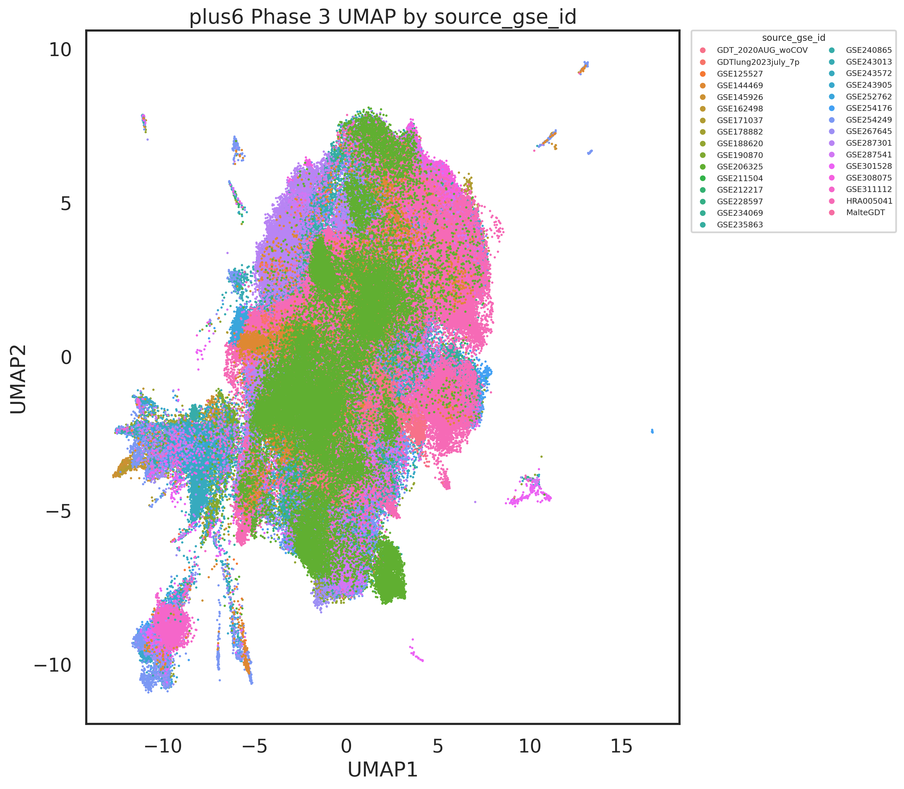
plus6 Phase 3 UMAP by tissue
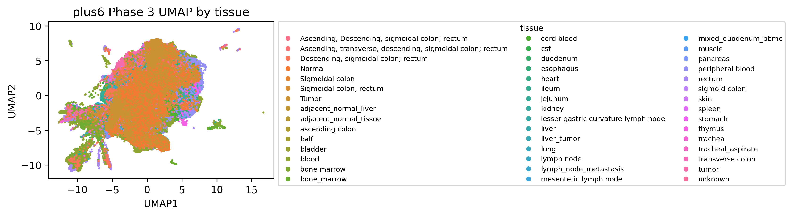
Simple Annotation
Simple labels are kept as a pragmatic interpretation layer on top of the integrated manifold. The detailed Treg/CD8 diagnostic figures are intentionally omitted here.
plus6 UMAP by corrected simple annotation
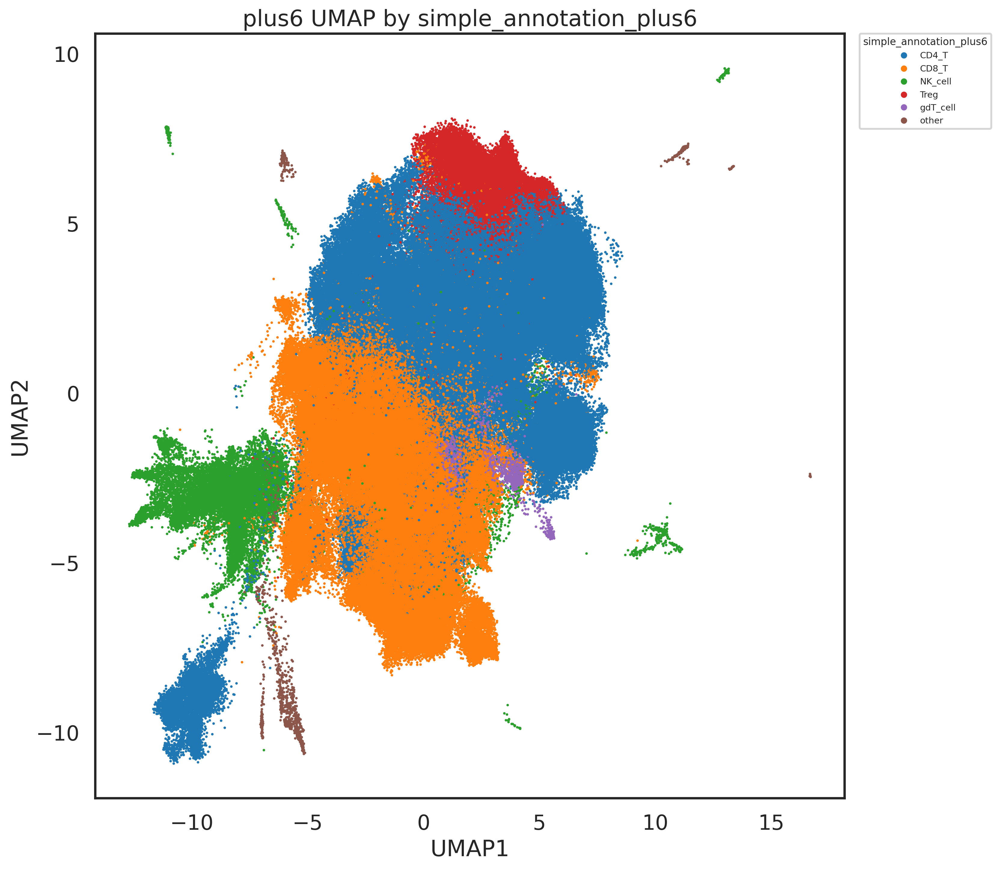
plus6 TNK marker UMAP panel

Phase 4 Score Space
Phase 4 is reported in raw score space. The report keeps the score UMAPs, the raw TRAB-versus-TRD scatter, and the threshold summaries by tissue and GSE.
plus6 UMAP by TRD score
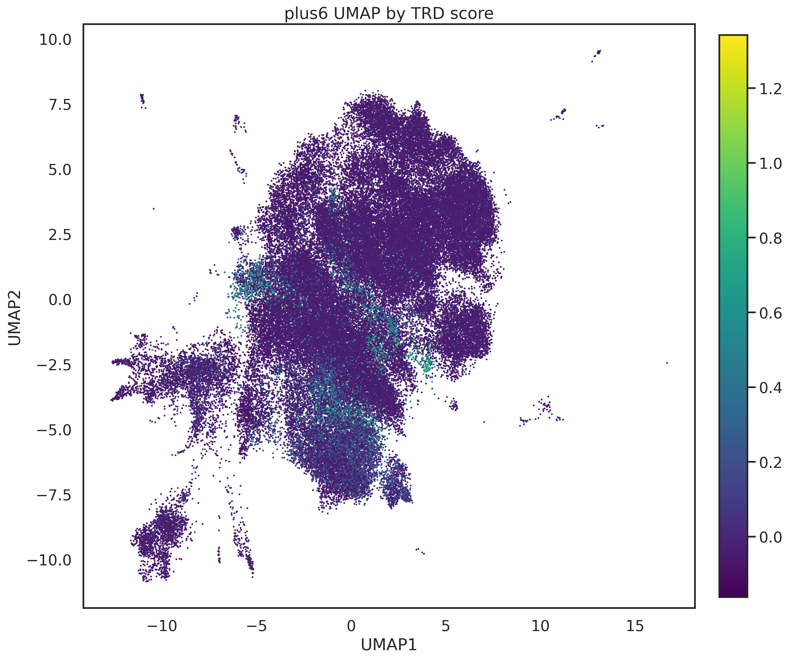
plus6 UMAP by TRAB score
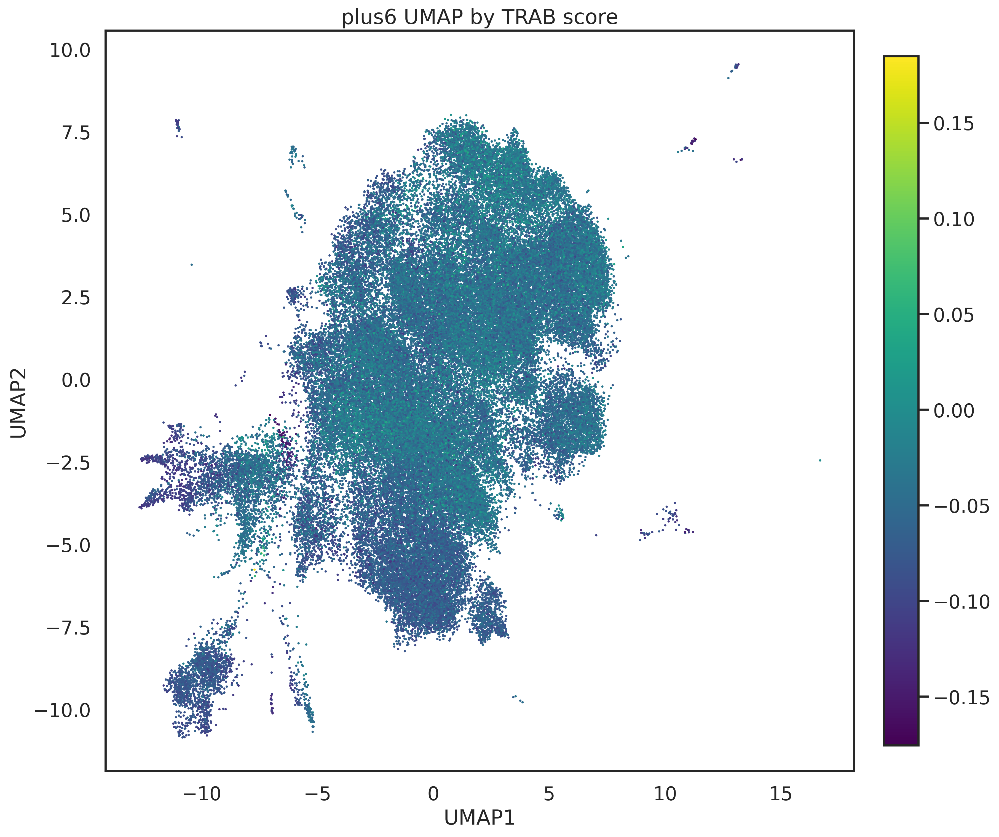
plus6 UMAP by TRD minus TRAB
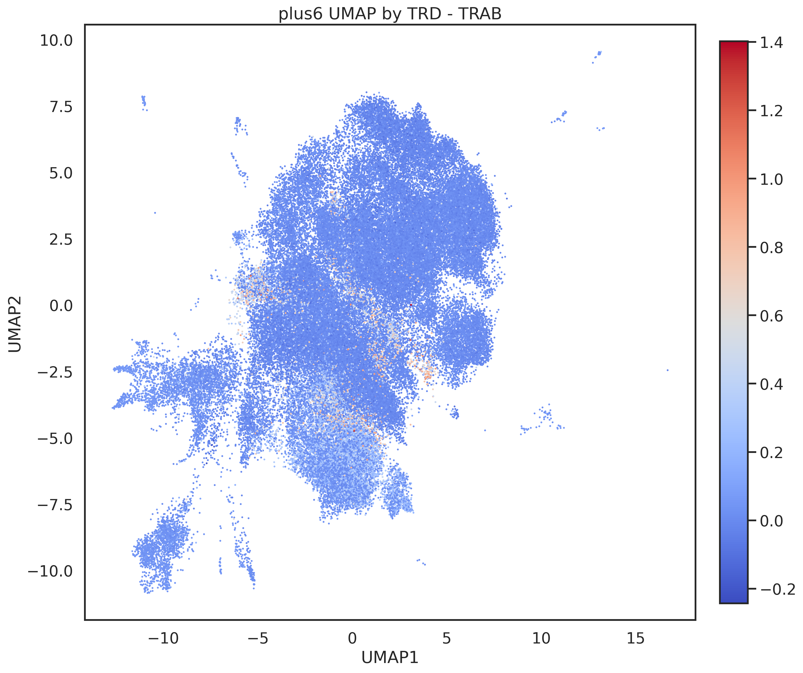
plus6 Raw TRAB-versus-TRD score space
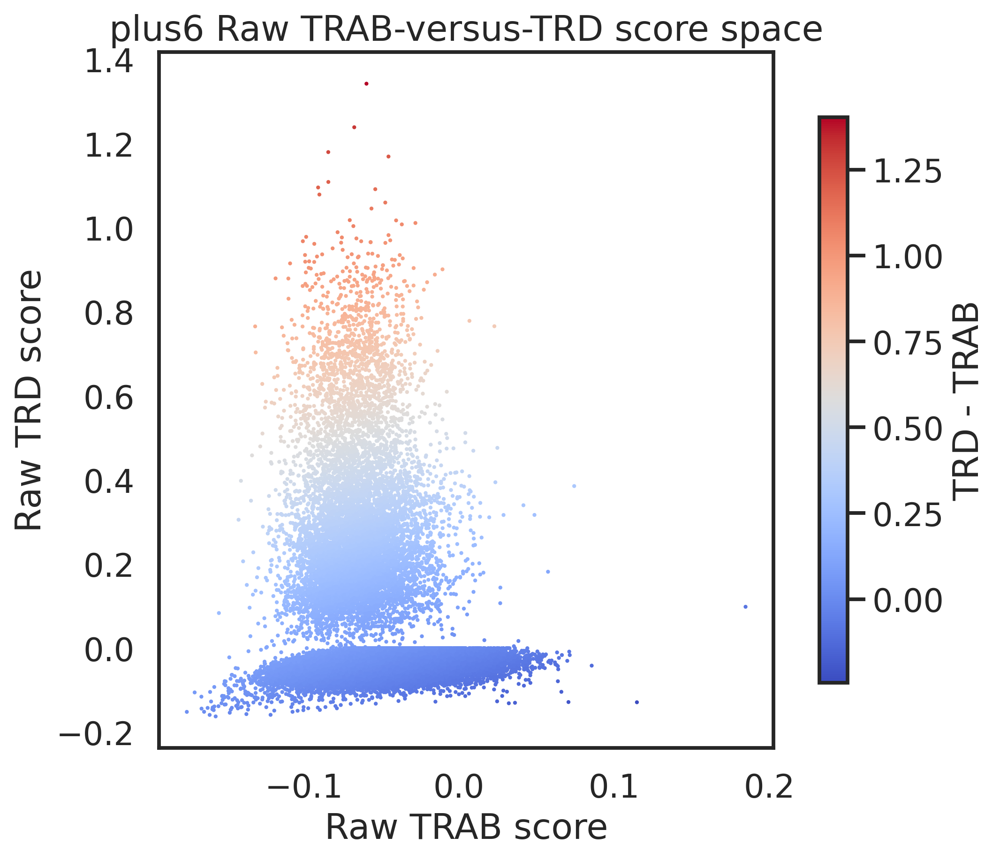
plus6 TRAB versus TRD colored by paired TCR
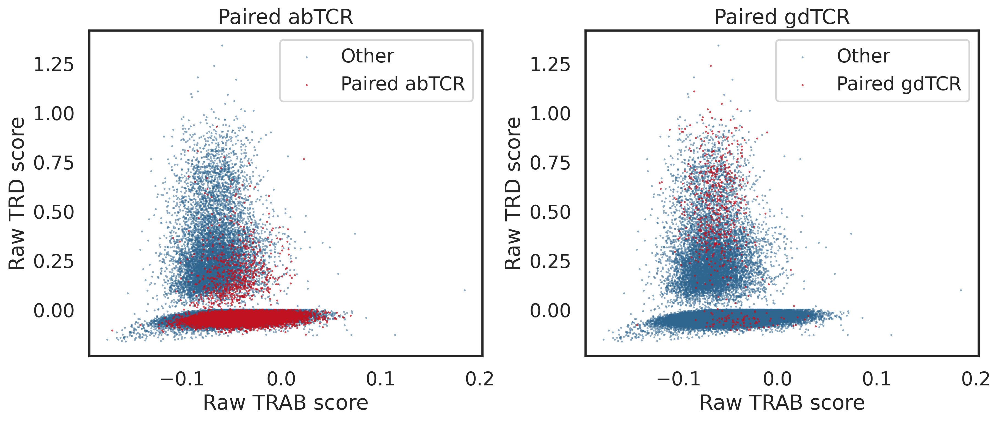
plus6 Phase 4 score distributions
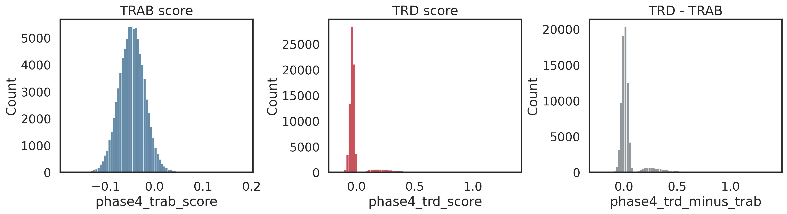
High-Confidence TRD-over-TRAB Candidates by Tissue
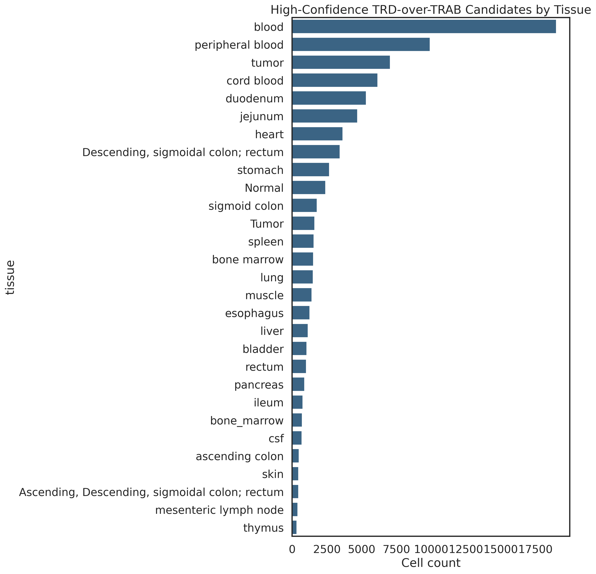
High-Confidence TRD-over-TRAB Candidates by GSE
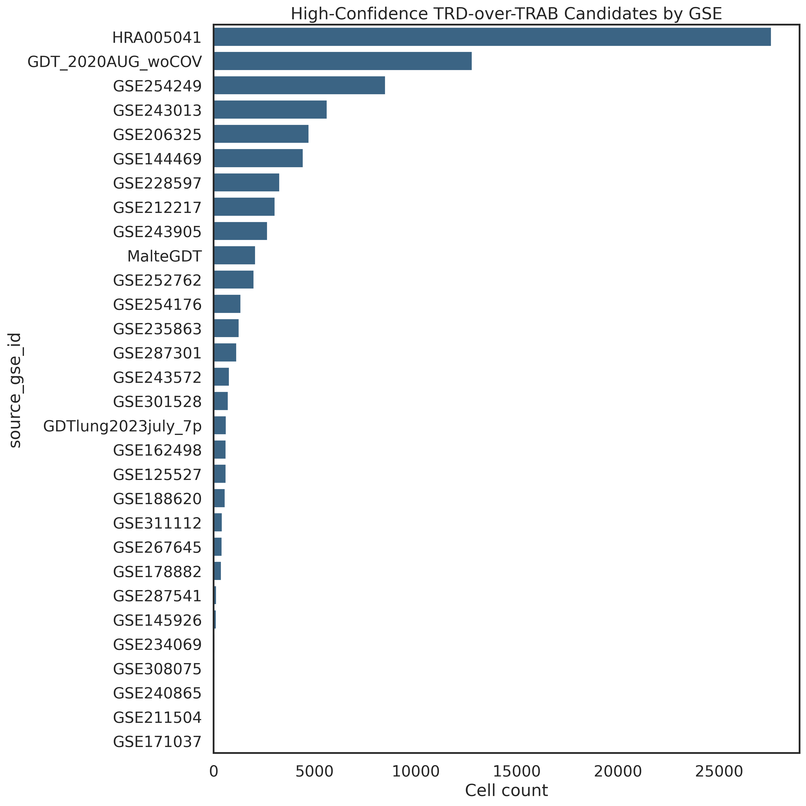
Broad TRD-Enriched Candidates by Tissue
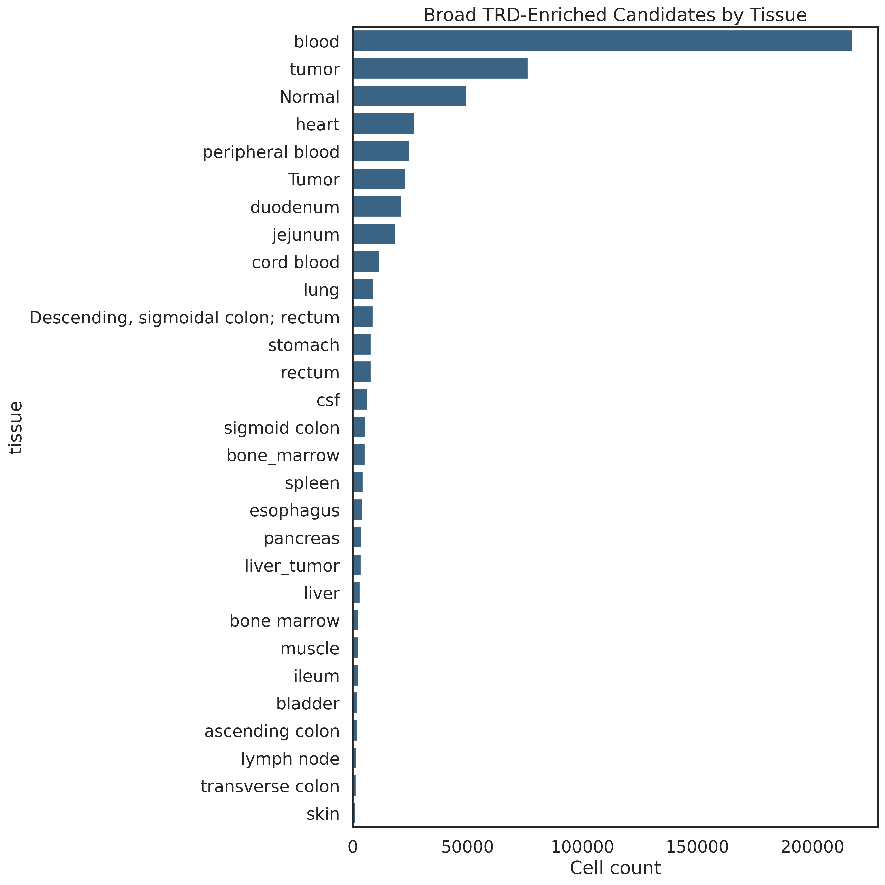
Broad TRD-Enriched Candidates by GSE
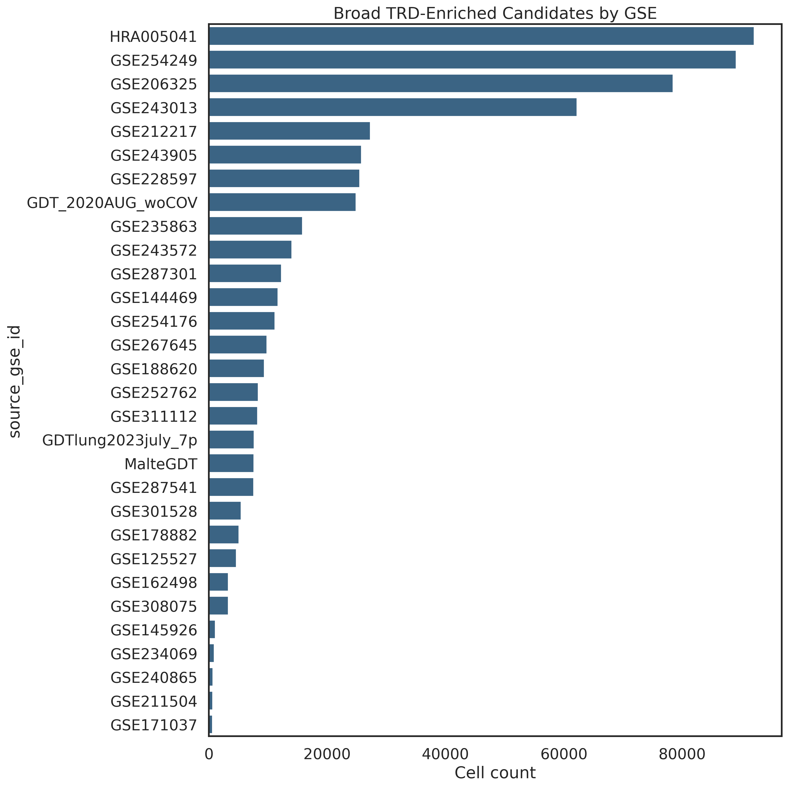
γδ-Focused Views
This section keeps the targeted TCR and sorted-γδ overlays and the tissue-level γδ statistics used in the current review.
plus6 paired TRA/TRB, paired TRG/TRD, and Sorted_gdT highlight UMAPs
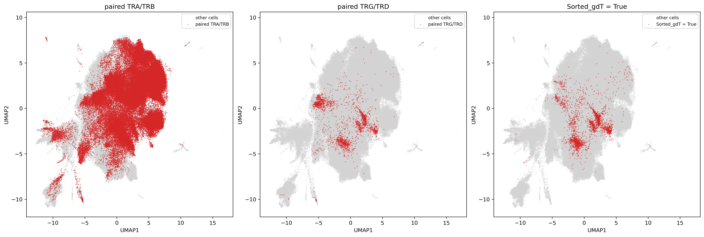